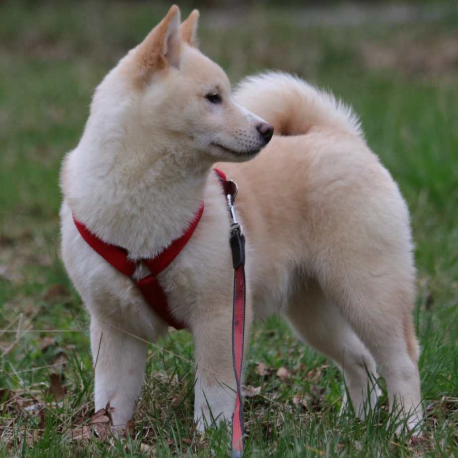
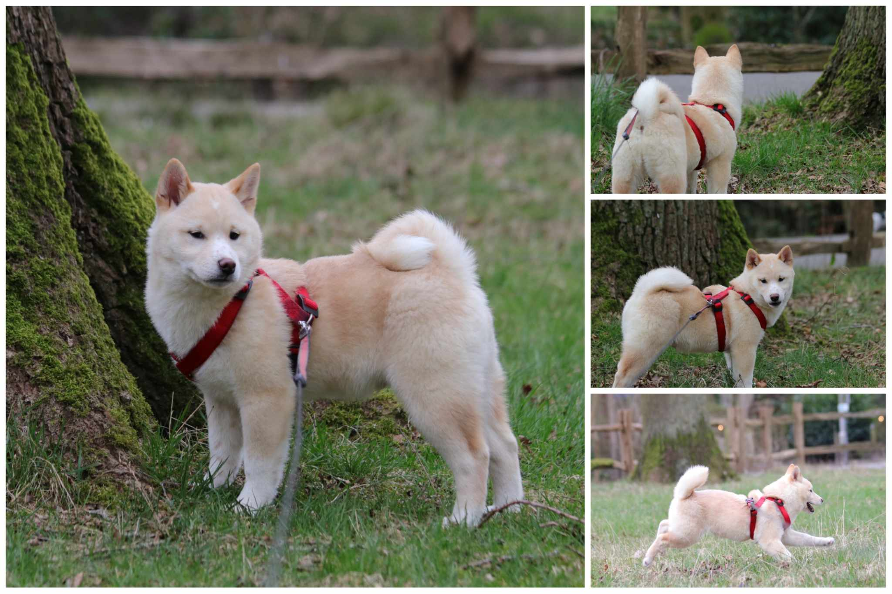
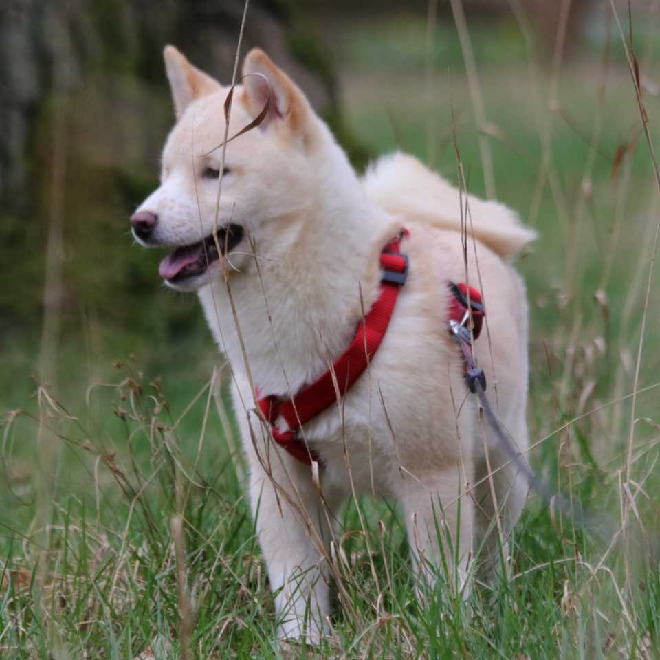

Shiba reu - Akira - geboren november 2023
Akira kwam bij ons via een hulpvraag van collega's.
Vijf Shiba puppy's zaten nog bij een broodfokker die deze maand alles weg moet hebben.
We deden een screening en vonden vier fijne families.
We spraken met iedereen tegelijk af om alle pups op te halen.
Voor de laatste pup vonden we niet tijdig een match.
Deze werd uiteindelijk aan ons afgestaan door de fokker.
Deze kleine Shiba reu kreeg van ons de naam Akira.
We gaan in de komende dagen meer over hem kunnen vertellen.
Momenteel is het allemaal wennen voor Akira.
Evengoed is het al duidelijk dat hij veerkrachtig is, happy en een heel fijn karakter heeft.
In de komende tijd zullen we zijn informatie kunnen aanvullen.
Zou Akira een match voor jou kunnen zijn?
Stuur ons dan een mail via shibarescuevzw@gmail.com
Via deze weg ontvang je onze vragenlijst om in te vullen.


|